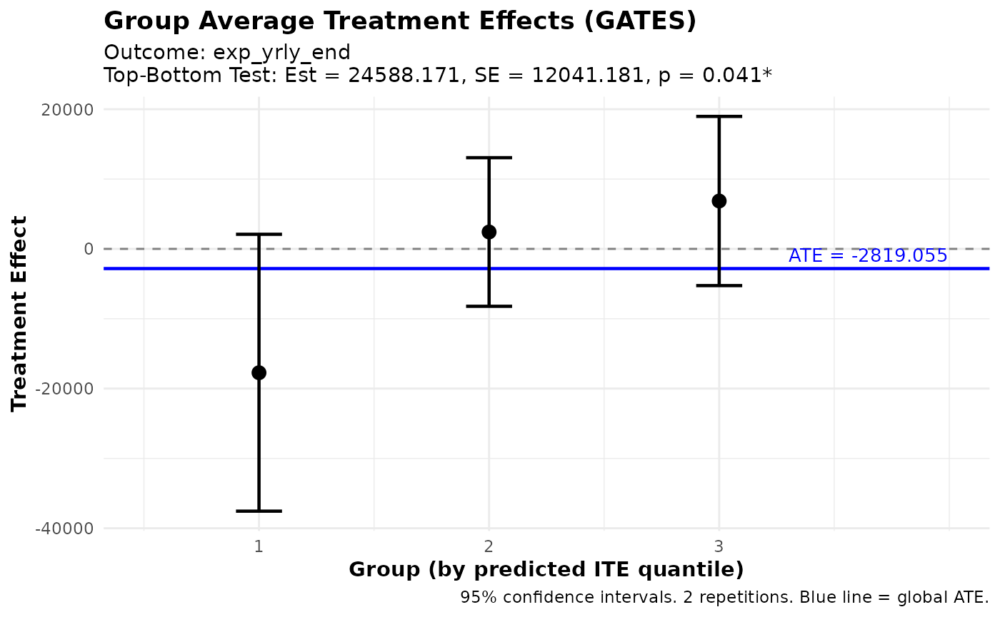
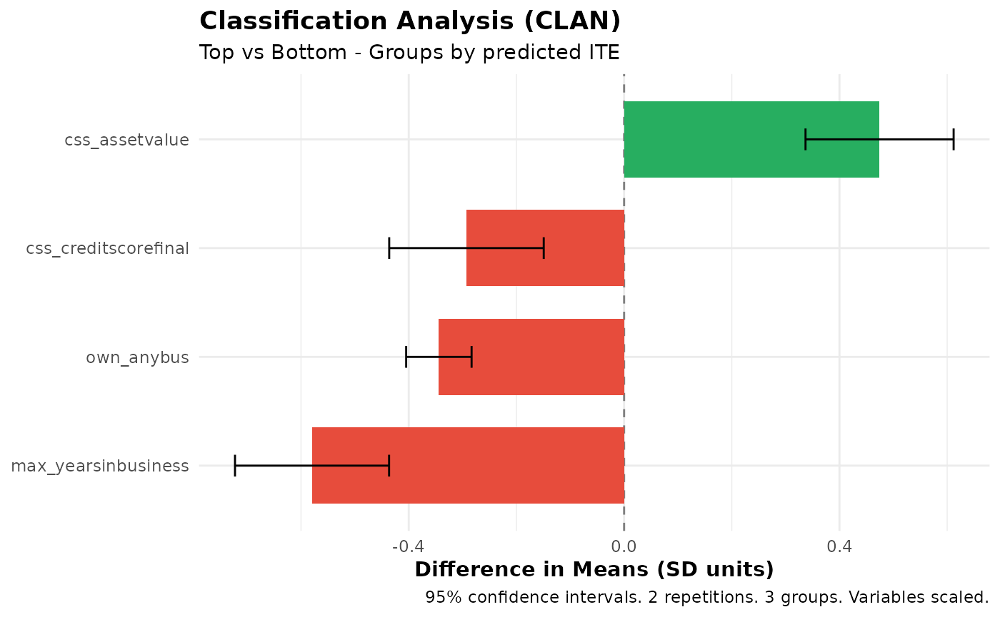
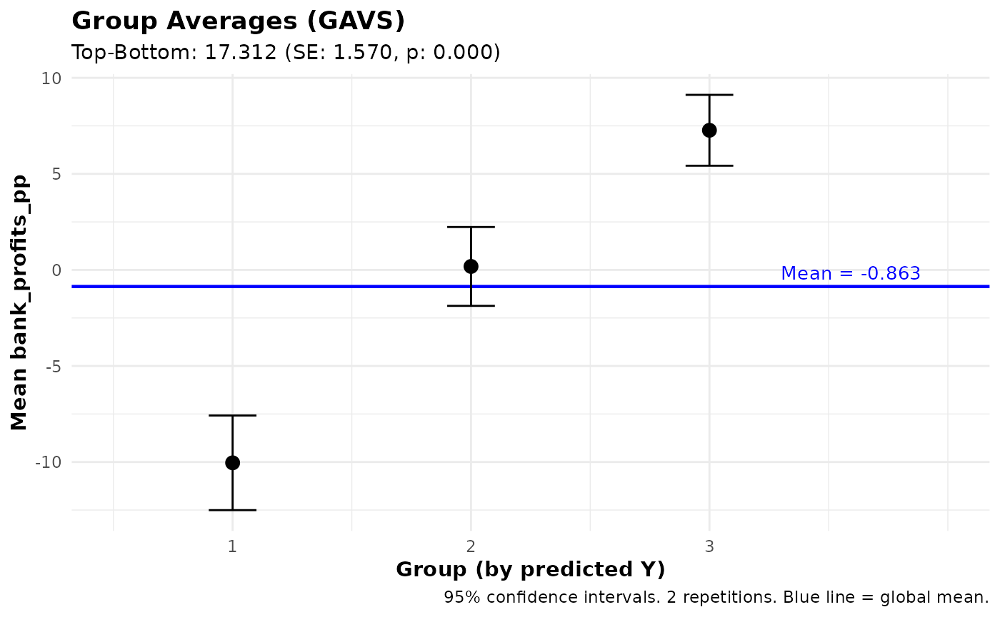
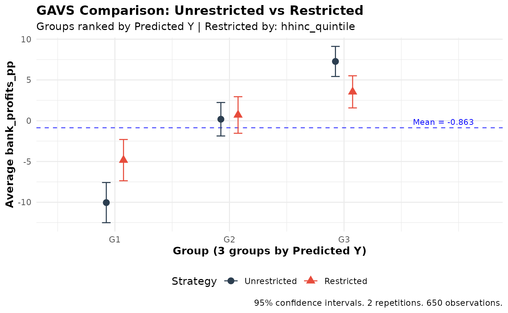

Quick Guide to ensembleHTE
Bruno Fava
2026-03-06
Source:vignettes/getting-started.Rmd
getting-started.RmdIntroduction
The ensembleHTE package provides tools for learning
features of heterogeneous treatment effects in randomized controlled
trials using an ensemble approach. The package implements the estimation
strategy developed in Fava (2025), which combines predictions from
multiple machine learning algorithms using Best Linear Predictor (BLP)
weights and repeated K-fold cross-fitting.
Key Concepts
GATES (Group Average Treatment Effects)
GATES provide a way to test for and visualize treatment effect heterogeneity by:
- Using machine learning to predict individual treatment effects based on covariates
- Sorting individuals into groups (e.g., terciles) based on these predictions
- Estimating the average treatment effect within each group
- Testing whether high-prediction and low-prediction groups have different effects
The Ensemble Approach
This package improves upon existing approaches by:
- Combining Multiple ML Algorithms: Combines predictions from several algorithms (Random Forest, XGBoost, etc.) using BLP weights
- K-fold Cross-Fitting: Trains models on K-1 folds and predicts on the held-out fold
- Full-Sample Inference: Uses the entire dataset for final estimation
- Repeated Sample-Splitting: Averages across M repetitions for stability
Basic Workflow
1. Load Data
We use the microcredit dataset that ships with the
package. It contains data from a randomized microfinance experiment in
the Philippines where microloans were randomly offered to
applicants.
library(ensembleHTE)
data(microcredit)
dim(microcredit)
#> [1] 1113 51
# Variables used throughout this guide
hte_covars <- c("css_creditscorefinal", "own_anybus",
"max_yearsinbusiness", "css_assetvalue")
has_loan <- microcredit$treat == 1 & microcredit$loan_size > 0
# Income quintiles (used for restricted comparisons)
microcredit$hhinc_quintile <- cut(
microcredit$hhinc_yrly_base,
breaks = quantile(microcredit$hhinc_yrly_base, probs = seq(0, 1, by = 0.2)),
labels = paste0("Q", 1:5),
include.lowest = TRUE
)2. Fit Ensemble HTE Model
We test whether the effect of being offered a microloan on business expenses varies across borrowers.
# Select covariates
hte_covars <- c("css_creditscorefinal", "own_anybus",
"max_yearsinbusiness", "css_assetvalue")
# Fit ensemble HTE model
fit <- ensemble_hte(
Y = "exp_yrly_end",
D = "treat",
X = hte_covars,
data = microcredit,
prop_score = "prop_score",
algorithms = c("lm", "grf"),
M = 10, # Use M >= 100 for final results
K = 4
)
# View results
print(fit)
summary(fit)#> Ensemble HTE Fit
#> ================
#>
#> Call:
#> ensemble_hte(data = microcredit, Y = "exp_yrly_end", X = hte_covars_quick,
#> D = "treat", prop_score = "prop_score", M = 2, K = 4, algorithms = c("lm",
#> "grf"))
#>
#> Data:
#> Observations: 1113
#> Targeted outcome: exp_yrly_end
#> Treatment: treat
#> Covariates: 4
#>
#> Model specification:
#> Algorithms: lm, grf
#> Metalearner: R-learner
#> Task type: regression (continuous outcome)
#> R-learner method: grf
#>
#> Split-sample parameters:
#> Repetitions (M): 2
#> Folds (K): 4
#> Ensemble strategy: cross-validated BLP
#> Ensemble folds: 5
#> Covariate scaling: enabled
#> Hyperparameter tuning: disabled
#> Ensemble HTE Summary
#> ====================
#>
#> Call:
#> ensemble_hte(data = microcredit, Y = "exp_yrly_end", X = hte_covars_quick,
#> D = "treat", prop_score = "prop_score", M = 2, K = 4, algorithms = c("lm",
#> "grf"))
#>
#> Outcome: exp_yrly_end
#> Treatment: treat
#> Observations: 1113
#> Repetitions: 2
#>
#> Best Linear Predictor (BLP):
#> beta1 (ATE): -2580.30 (SE: 4397.19, p: 0.557)
#> beta2 (HET): 0.67 (SE: 0.30, p: 0.026) *
#> -> Significant heterogeneity detected (p < 0.05)
#>
#> Group Average Treatment Effects (GATES) with 3 groups:
#> Group Estimate Std.Error Pr(>|t|)
#> --------------------------------------------
#> 1 -17732.19 10113.66 0.080 .
#> 2 2419.04 5428.34 0.656
#> 3 6855.98 6179.99 0.267
#>
#> Top - Bottom: 24588.17 (SE: 12041.18, p: 0.041) *
#>
#> ---
#> Signif. codes: 0 '***' 0.001 '**' 0.01 '*' 0.05 '.' 0.1 ' ' 13. Analyze Treatment Effect Heterogeneity
# Best Linear Predictor (BLP)
blp_results <- blp(fit)
print(blp_results)
#> BLP Results (Best Linear Predictor of CATE)
#> ============================================
#>
#> Fit type: HTE (ensemble_hte)
#> Outcome analyzed: exp_yrly_end
#> Repetitions: 2
#>
#> Coefficients:
#> beta1 (ATE): Average Treatment Effect
#> beta2 (HET): Heterogeneity loading (significant = ML captures heterogeneity)
#>
#> Term Estimate Std.Error t value Pr(>|t|)
#> ----------------------------------------------------
#> beta1 -2580.30 4397.19 -0.59 0.557
#> beta2 0.67 0.30 2.23 0.026 *
#>
#> ---
#> Signif. codes: 0 '***' 0.001 '**' 0.01 '*' 0.05 '.' 0.1 ' ' 1
# Group Average Treatment Effects (GATES)
gates_results <- gates(fit, n_groups = 3)
print(gates_results)
#> GATES Results
#> =============
#>
#> Fit type: HTE (ensemble_hte)
#> Outcome analyzed: exp_yrly_end
#> Number of groups: 3
#> Repetitions: 2
#>
#> Group Average Treatment Effects:
#>
#> Group Estimate Std.Error t value Pr(>|t|)
#> ----------------------------------------------------
#> 1 -17732.19 10113.66 -1.75 0.080 .
#> 2 2419.04 5428.34 0.45 0.656
#> 3 6855.98 6179.99 1.11 0.267
#>
#> Heterogeneity Tests:
#> ----------------------------------------------------
#> Test Estimate Std.Error t value Pr(>|t|)
#> ----------------------------------------------------
#> Top-Bottom 24588.17 12041.18 2.04 0.041 *
#> Top-All 9693.14 5759.59 1.68 0.092 .
#>
#> ---
#> Signif. codes: 0 '***' 0.001 '**' 0.01 '*' 0.05 '.' 0.1 ' ' 1
plot(gates_results)
# Classification Analysis (CLAN)
clan_results <- clan(fit, n_groups = 3)
print(clan_results)
#> CLAN Results (Classification Analysis)
#> =======================================
#>
#> Outcome: exp_yrly_end (treatment effects) | Groups: 3 | Reps: 2
#>
#> Group Means (by predicted ITE):
#> Top Bottom Else All
#> --------------------------------------------------------------------
#> css_creditscorefinal 50.51 52.08 51.72 51.32
#> (0.27) (0.29) (0.20) (0.16)
#> own_anybus 0.53 0.88 0.83 0.73
#> (0.03) (0.02) (0.01) (0.01)
#> max_yearsinbusiness 5.16 8.36 7.41 6.66
#> (0.22) (0.34) (0.22) (0.17)
#> css_assetvalue 109209.74 31013.42 44485.77 66060.43
#> (10819.81) (4083.34) (4737.52) (4940.35)
#>
#> Differences from Top Group:
#> Top-Bot Top-Else Top-All
#> -----------------------------------------------------------
#> css_creditscorefinal -1.57*** -1.21*** -0.81***
#> (0.39) (0.33) (0.22)
#> own_anybus -0.34*** -0.30*** -0.20***
#> (0.03) (0.03) (0.02)
#> max_yearsinbusiness -3.20*** -2.25*** -1.50***
#> (0.40) (0.31) (0.21)
#> css_assetvalue 78196.32*** 64723.97*** 43149.31***
#> (11565.28) (11891.83) (7980.06)
#>
#> ---
#> Signif. codes: 0 '***' 0.001 '**' 0.01 '*' 0.05 '.' 0.1 ' ' 1
plot(clan_results)
Prediction Tasks
The package also supports standard prediction tasks (without treatment effects). Here we predict bank profitability per peso lent, training only on borrowers who actually took a loan (where bank profits are observed):
# Identify borrowers with observed bank profits
has_loan <- microcredit$treat == 1 & microcredit$loan_size > 0
# Fit ensemble prediction model
pred_fit <- ensemble_pred(
Y = "bank_profits_pp",
X = c("css_creditscorefinal", "own_anybus", "css_assetvalue",
"age", "gender", "hhinc_yrly_base"),
data = microcredit,
train_idx = has_loan,
algorithms = c("lm", "grf"),
M = 10, K = 4
)
# Analyze predictions
summary(pred_fit)
# Group Averages
gavs_results <- gavs(pred_fit, n_groups = 3)
print(gavs_results)
plot(gavs_results)#> Ensemble Prediction Summary
#> ===========================
#>
#> Call:
#> ensemble_pred(data = microcredit, Y = "bank_profits_pp", X = c("css_creditscorefinal",
#> "own_anybus", "css_assetvalue", "age", "gender", "hhinc_yrly_base"),
#> train_idx = has_loan, M = 2, K = 4, algorithms = c("lm",
#> "grf"))
#>
#> Outcome: bank_profits_pp
#> Observations: 1113
#> Training obs: 650
#> Repetitions: 2
#>
#> Prediction Accuracy (averaged across 2 repetitions):
#> R-squared: 0.21
#> RMSE: 15.23
#> MAE: 10.96
#> Correlation: 0.46
#>
#> Best Linear Predictor (BLP):
#> intercept: 0.00 (SE: 0.60, p: 0.995)
#> slope: 0.98 (SE: 0.07, p: 0.000) ***
#> -> Intercept close to 0 and slope close to 1 indicate good calibration
#>
#> Group Averages (GAVS) with 3 groups:
#> Group Estimate Std.Error Pr(>|t|)
#> --------------------------------------------
#> 1 -10.04 1.26 0.000 ***
#> 2 0.18 1.05 0.862
#> 3 7.27 0.94 0.000 ***
#>
#> Top - Bottom: 17.31 (SE: 1.57, p: 0.000) ***
#>
#> ---
#> Signif. codes: 0 '***' 0.001 '**' 0.01 '*' 0.05 '.' 0.1 ' ' 1
#> GAVS Results (Group Averages)
#> =============================
#>
#> Outcome analyzed: bank_profits_pp
#> Number of groups: 3
#> Repetitions: 2
#>
#> Data usage:
#> ML trained on: 650 of 1113 obs
#> Analysis evaluated on: 650 of 1113 obs
#> Groups (3) formed on: all observations (1113 obs)
#>
#> Group Average Outcomes (groups by predicted Y):
#>
#> Group Estimate Std.Error t value Pr(>|t|)
#> ----------------------------------------------------
#> 1 -10.04 1.26 -7.99 0.000 ***
#> 2 0.18 1.05 0.17 0.862
#> 3 7.27 0.94 7.72 0.000 ***
#>
#> Heterogeneity Tests:
#> ----------------------------------------------------
#> Test Estimate Std.Error t value Pr(>|t|)
#> ----------------------------------------------------
#> Top-Bottom 17.31 1.57 11.03 0.000 ***
#> Top-All 7.28 0.78 9.35 0.000 ***
#>
#> ---
#> Signif. codes: 0 '***' 0.001 '**' 0.01 '*' 0.05 '.' 0.1 ' ' 1
Comparing Ranking Strategies
Use gates_restricted() or gavs_restricted()
to compare unrestricted vs. restricted ranking. Here we test whether
requiring income-balanced loan allocation reduces the lender’s ability
to identify profitable borrowers:
# Compare targeting strategies
comparison <- gavs_restricted(
pred_fit,
restrict_by = "hhinc_quintile",
n_groups = 3,
subset = "train"
)
print(comparison)
#>
#> GAVS Comparison: Unrestricted vs Restricted Ranking
#> ====================================================
#>
#> Strategy comparison:
#> - Unrestricted: Rank predictions across full sample within folds
#> - Restricted: Rank predictions within groups ('hhinc_quintile')
#> - Restrict_by levels: Q1, Q2, Q3, Q4, Q5
#>
#> Groups (3) defined by: predicted Y
#> Outcome: bank_profits_pp
#> Observations: 650
#> Repetitions: 2
#>
#> Unrestricted GAVS Estimates:
#> ----------------------------------------
#> Group Estimate SE t p-value
#> 1 -10.04 1.26 -7.99 0.000 ***
#> 2 0.18 1.05 0.17 0.862
#> 3 7.27 0.94 7.72 0.000 ***
#>
#> Top-Bottom: 17.31 (SE: 1.57, p = 0.000) ***
#> All: -0.01 (SE: 0.62, p = 0.989)
#> Top-All: 7.28 (SE: 0.78, p = 0.000) ***
#>
#> Restricted GAVS Estimates:
#> ----------------------------------------
#> Group Estimate SE t p-value
#> 1 -4.83 1.29 -3.74 0.000 ***
#> 2 0.70 1.14 0.61 0.539
#> 3 3.54 1.00 3.52 0.000 ***
#>
#> Top-Bottom: 8.37 (SE: 1.64, p = 0.000) ***
#> All: -0.01 (SE: 0.66, p = 0.990)
#> Top-All: 3.55 (SE: 0.86, p = 0.000) ***
#>
#> Difference (Unrestricted - Restricted):
#> ----------------------------------------
#> Group Estimate SE t p-value
#> 1 -5.21 1.23 -4.24 0.000 ***
#> 2 -0.52 1.35 -0.39 0.698
#> 3 3.73 1.00 3.74 0.000 ***
#>
#> Top-Bottom Diff: 8.94 (SE: 1.65, p = 0.000) ***
#> All Diff: -0.00 (SE: 0.25, p = 1.000)
#> Top-All Diff: 3.73 (SE: 1.00, p = 0.000) ***
#>
#> ---
#> Signif. codes: 0 '***' 0.001 '**' 0.01 '*' 0.05 '.' 0.1 ' ' 1
plot(comparison)
Using Subsets
All analysis functions (gates, blp,
clan, gavs, and their comparison versions)
support a subset argument that allows you to evaluate
results on a subset of observations. This is useful when:
- The outcome is only observed for certain observations
- You want to focus on a specific subpopulation
- You need to exclude certain observations from analysis
# Subset with logical vector (e.g., only business owners)
subset_biz <- microcredit$own_anybus == 1
gavs_results <- gavs(pred_fit, n_groups = 3, subset = subset_biz)
# Subset with integer indices
subset_indices <- which(microcredit$lower_window == 1)
gates_results <- gates(fit, n_groups = 3, subset = subset_indices)
# Explicitly use all observations
blp_results <- blp(fit, subset = "all")Important notes: - For gates() and
blp(), the subset must include observations from both
treatment and control groups - For gavs(), this is useful
when outcomes are only observed for certain units (e.g., treatment
effects on outcomes only observable under treatment) - When using
subset, the group_on argument controls which
observations define the group cutoffs. The default
(group_on = "auto") uses the same population that was used
to train the ML model: all observations for
ensemble_hte fits, or the train_idx subset for
ensemble_pred fits trained on a subset. Set
group_on = "all" to always use all observations, or
group_on = "analysis" to form groups within the analysis
subset. The same applies to gates_restricted() and
gavs_restricted(). - A message will be printed indicating
how many observations are used when a subset is applied
Tips and Best Practices
- Number of algorithms: Start with 2-4 diverse algorithms
- Number of folds: K=3 or K=4 recommended
- Number of groups: J=3 (terciles) is standard
- Repetitions: M=5-10 for exploration, M>=100 for final results
- Sample size: Works best with n > 200
Panel Data
For panel or longitudinal data (multiple observations per
individual), use the individual_id argument. This ensures
proper fold splitting (all observations for an individual stay in the
same fold) and uses cluster-robust standard errors. The
microcredit dataset is cross-sectional, so this example
uses simulated data:
# Simulate panel data: 200 individuals x 4 periods
set.seed(123)
N <- 200; T_periods <- 4
panel_data <- data.frame(
id = rep(1:N, each = T_periods),
period = rep(1:T_periods, times = N),
D = rep(rbinom(N, 1, 0.5), each = T_periods),
X1 = rnorm(N * T_periods),
X2 = rnorm(N * T_periods)
)
panel_data$Y <- 2 + panel_data$D * (1 + panel_data$X1) +
0.5 * panel_data$X2 + rnorm(N * T_periods)
# Fit with individual_id for cluster-aware cross-fitting
fit <- ensemble_hte(
Y = "Y",
D = "D",
X = c("X1", "X2"),
data = panel_data,
individual_id = "id",
algorithms = c("lm", "grf"),
M = 10, K = 3
)
# All downstream analyses automatically use clustered SEs
gates(fit, n_groups = 3)
blp(fit)
clan(fit)See the complete guide vignette for a full panel data example.
Performance Tips
Computation time scales with M * K * length(algorithms).
Some guidelines:
-
Debugging: Use
M = 2,K = 3, and 1-2 algorithms to verify your code quickly -
Exploration: Use
M = 5-10with your full algorithm set -
Final results: Use
M >= 100for valid inference (this is required by the methodology) -
Parallelization: Set
n_cores > 1to run repetitions in parallel -
Tuning:
tune = TRUEsignificantly increases time; use only for final results
References
Fava, B. (2025). Training and Testing with Multiple Splits: A Central Limit Theorem for Split-Sample Estimators. arXiv preprint arXiv:2511.04957.
Getting Help
- See
?ensemble_hteand?gatesfor detailed function documentation - Report issues at: https://github.com/bfava/ensembleHTE/issues